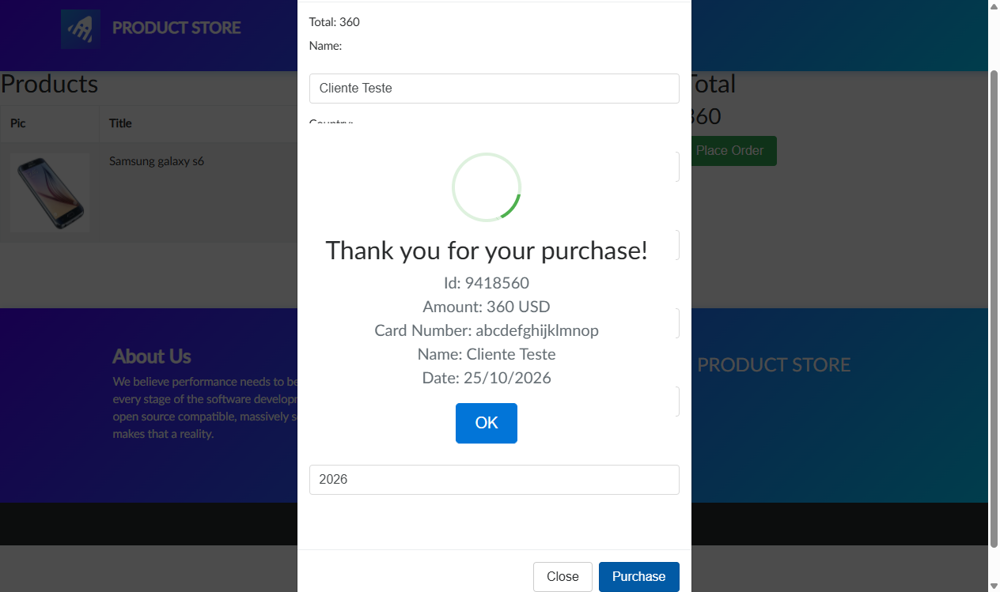

…
// Garantia da Qualidade de Software · USJT 2026/2
Plano de testes, automação com Selenium e os defeitos que encontramos numa loja virtual.
$ python -m pytest
collected 14 items
CT01–CT11 ......... PASSED
CT12–CT14 ......... FAILED
3 failed, 11 passed in 217.97s
Grupo 2 · Prof. Leandro Negreiros
Anna Beatriz Saroa Franco
Gabriel Dousseau
Igor Coutinho
Julia Santos Moreira
Luã Luz Santos
Victor Oliveira
// O sistema
O Demoblaze vende celulares, notebooks e monitores. Cadastro, login e compra acontecem em janelas modais, e o site responde com alertas do navegador.
01 · fluxo
Cadastro e login
Sign up e Log in
02 · fluxo
Catálogo e produto
Categorias e página do produto
03 · fluxo
Carrinho e compra
Finalização com Place Order
Fora do escopo:
Carga e desempenho
Contact e About us
Outros navegadores
// Plano de testes · ISO/IEC 25010
Adequação funcional
Produtos certos na vitrine, total igual à soma dos preços e compra só com dados válidos.
Segurança
Senha e cartão: validação fraca expõe o cliente a fraude (LGPD, PCI DSS).
Observados na execução:
Usabilidade
Confiabilidade
Eficiência de desempenho
Cenário: CA02 · Login
Dado um usuário cadastrado, Quando faz login,
Então vê “Welcome <usuário>”; com senha errada, um alerta de erro
// Riscos do projeto
| Risco | Ação preventiva ou corretiva | Sev. | Prior. |
|---|---|---|---|
| Site instável ou fora do ar | Verificar antes e repetir a execução | Alta | Alta |
| Nome de usuário já cadastrado | Nome fictício e único a cada execução | Média | Média |
| Páginas e produtos demorando | Esperas explícitas (WebDriverWait) | Média | Alta |
| Alertas e modais na automação | Tratar alertas e aguardar os modais | Alta | Alta |
| Mudança no site quebrar seletores | Seletores centralizados nos Page Objects | Média | Média |
| Cadastro ou login aceitar dado inválido | CT02, CT04, CT09 e CT12 | Alta | Alta |
| Total do carrinho errado | CT06 e CT11 conferem o total | Alta | Alta |
| Compra com dados inválidos | CT07, CT13 e CT14 | Alta | Alta |
// Casos de teste
| ID | Caso | Técnica |
|---|---|---|
| CT01 | Cadastro com usuário novo | PE válida |
| CT02 | Cadastro com usuário existente | PE inválida |
| CT03 | Login válido | PE válida |
| CT04 | Login com senha errada | PE inválida |
| CT05 | Filtro por categoria | PE |
| CT06 | Total do carrinho | Fluxo |
| CT07 | Compra com nome e cartão vazios | VL (0) |
| ID | Caso | Técnica |
|---|---|---|
| CT08 | Compra completa | Fluxo |
| CT09 | Login com usuário inexistente | PE inválida |
| CT10 | Página do produto | Fluxo |
| CT11 | Remover do carrinho | Fluxo |
| CT12 | Senha de 7 caracteres | VL |
| CT13 | Cartão com letras | PE inválida |
| CT14 | Mês 13 | VL |
VL · mês
1
2
…
11
12
13
VL · senha
…
7
8
9
…
PE = partição de equivalência · VL = valor-limite · em laranja: validações que o site deveria ter (CT12 a CT14)
// Detalhamento dos casos
Objetivo
Verificar se o sistema recusa um número de cartão com letras.
Pré-condições
Ao menos 1 produto no carrinho.
Fluxo principal
Cart → Place Order → cartão “abcdefghijklmnop” → Purchase
Fluxos alternativos
FA01: cartão com poucos dígitos · FA02: cartão com espaços
Resultado esperado
Compra recusada. Se aparecer “Thank you for your purchase!”, é defeito.
Os 14 casos seguem essa estrutura no relatório, agrupados por fluxo: cadastro, login, catálogo, carrinho e finalização da compra.
// Automação
tests/
Teste pytest
Cenário em Dado, Quando, Então
pages/
Page Objects
Seletores e ações de cada tela
WebDriver
Selenium
Clica, digita e espera como uma pessoa
conftest.py
Chrome
Abre a cada teste e salva print em falha
evidencias/
Demoblaze
O sistema testado, com prints de cada teste
Esperas explícitas
Modais, vitrine e carrinho carregam com atraso.
Leitura dos alertas
Cadastro, login e “Add to cart” respondem com alertas do navegador.
Usuário único
O site recusa nomes repetidos, então cada execução cria um novo.
// Execução final · 25/11/2026
CT01 cadastro_usuario_novo ............. PASSED
CT02 cadastro_usuario_existente ........ PASSED
CT03 login_valido ...................... PASSED
CT04 login_senha_errada ................ PASSED
CT05 filtro_categoria_monitores ........ PASSED
CT06 total_do_carrinho ................. PASSED
CT07 compra_campos_vazios .............. PASSED
CT08 compra_completa ................... PASSED
CT09 login_usuario_nao_cadastrado ...... PASSED
CT10 pagina_do_produto ................. PASSED
CT11 remover_produto ................... PASSED
CT12 senha_de_7_caracteres ............. FAILED
CT13 cartao_com_letras ................. FAILED
CT14 compra_com_mes_13 ................. FAILED
3 failed, 11 passed in 217.97s
14
testes executados em 217,97 s
11
PASSED: os fluxos principais funcionam
3
FAILED: CT12, CT13 e CT14, as validações
// Defeitos
| ID | Defeito | Severidade | Teste |
|---|---|---|---|
| DF01 | Cadastro aceita senha de 7 caracteres | Média | CT12 |
| DF02 | Compra confirmada com cartão “abcdefghijklmnop” | Alta | CT13 |
| DF03 | Compra confirmada com mês 13 | Média | CT14 |
| DF04 | Comprovante mostra a data com um mês a menos | Baixa | CT13 |
| DF05 | Comprovante exibe o número completo do cartão | Alta | CT13 |
2 · severidade alta
2 · média
1 · baixa
DF01 a DF03: encontrados pelos testes de validação. DF04 e DF05: encontrados pelo grupo ao analisar o print do CT13.
// Evidência do CT13

DF02 · DF05
DF04
DF02 · Card Number: abcdefghijklmnop
A compra foi confirmada com letras no lugar do número do cartão.
DF05 · o número aparece inteiro
O PCI DSS manda mostrar só os 4 últimos dígitos.
DF04 · Date: 25/10/2026
A compra foi feita em 25/11/2026. A data sai com um mês a menos.
// Métricas
78,6%
Testes aprovados
11 ÷ 14. As 3 reprovações são todas de validação.
100%
Critérios cobertos
7 ÷ 7 critérios de aceitação têm teste automatizado.
4 de 5
Defeitos na compra
Cadastro e login: 1 · Catálogo: 0 · Carrinho e compra: 4.
11 PASSED
3 FAILED
// Ética
DF01 · senha fraca
Clientes com conta
Senha curta é descoberta por tentativa e erro, e a conta invadida expõe dados pessoais.
LGPD, art. 46
DF02 e DF03 · pagamento
Clientes e a loja
O pedido é confirmado com cartão inválido: o cliente acha que comprou e a loja processa pedidos que não serão pagos.
CDC, arts. 6º e 14 · PCI DSS
DF04 e DF05 · comprovante
Clientes
A data errada atrapalha provar a compra, e o cartão completo fica exposto na tela.
CDC, art. 49 · PCI DSS · LGPD
Quem desenvolve valida os dados no servidor. Quem testa procura o problema de propósito e não esconde o resultado.
// Recomendações
→ corrige DF01
Senha com 8 caracteres ou mais
E bloqueio de senhas vazadas (OWASP, NIST).
→ corrige DF02
Validar o cartão no servidor
Só dígitos, tamanho certo e dígito verificador (Luhn).
→ corrige DF03
Recusar datas impossíveis
Mês de 1 a 12 e cartão dentro da validade.
→ corrige DF04
Gerar a data do pedido no servidor
E conferir o comprovante no teste de compra.
→ corrige DF05
Mascarar o cartão no comprovante
Só os 4 últimos dígitos (PCI DSS).
→ protege CT12 a CT14
Manter os testes na rotina
Rodando a cada mudança, para o defeito não voltar.
// fim da execução
14 testes automatizados, 5 defeitos com evidência, e um teste que falha nunca é apagado.
github.com/igorcoutinho31/demoblaze · Uso de IA declarado no relatório